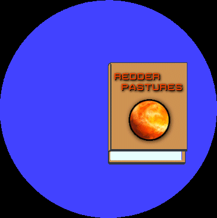
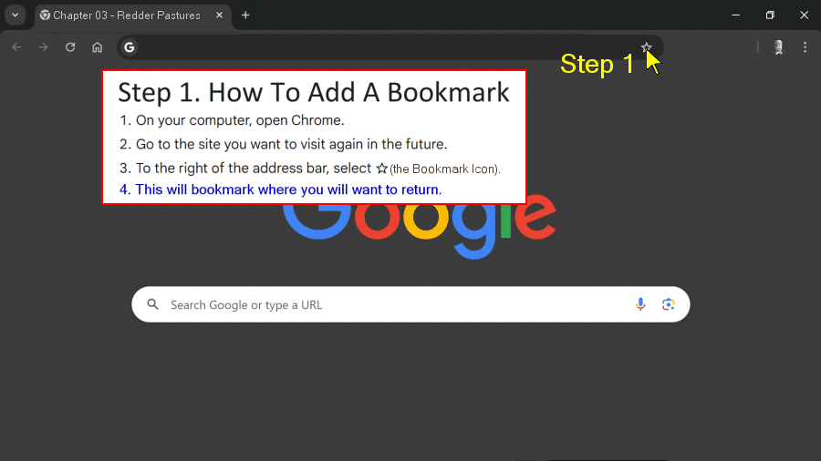
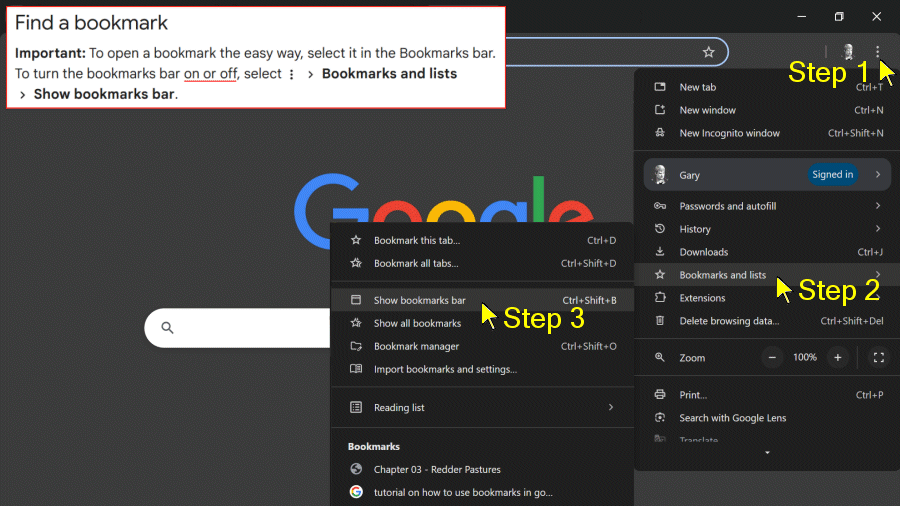
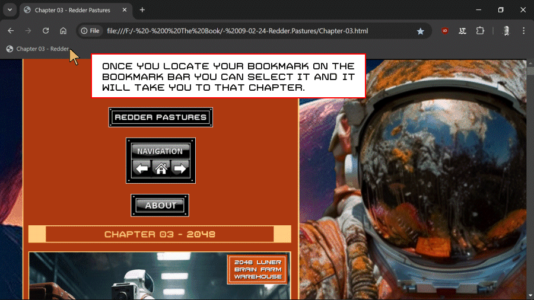

Google Chrome Bookmarks Tutorial

This tutorial is aimed at Google Chrome Users.
If You are Not a Google Chrome User you may Download and Install the



Google Chrome Browser Here:


Start by opening Google Chrome.

Open Google Chrome's Bookmark Bar

Select your Bookmarked Chapter.